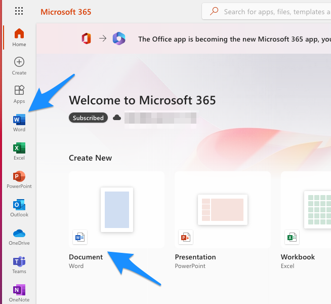

5 Wordiin viitteet
Esittelen seuraavassa metodin, jolla saat tuotua viitteitä Mendeleyn henk.koht. kirjastostasi MS Wordin web-versioon.
- Googleta “microsoft 365: login” tai paina alla olevaa linkkiä:
- Tarvitset Officeen tilin itsellesi, jos sinulle ei sellaista ole ja tahdot jatkaa tämän metodin opiskelua, sinun pitää luoda itsellesi kys. tili. Tämän jälkeen pääset yo. linkistä sisäänkirjautumaan MS Officen web-pohjaisiin toimintoihin.
- Kun olet päässyt sisäänkirjautumaan yo. linkistä, avautuu seuraava näkymä. Klikkaa joko Wordin ikoniin tai suoraan Word-dokumentin luonti-ikoniin:

- Jotta saat Mendeleyn käyttöösi, sinun pitää lisätä itsellesi Mendeleyn “Add-in” käyttöön.
- Klikkaa Wordin valikosta kohtaan “Insert”:
- Tämän jälkeen kolmeen pisteeseen:

- Sieltä kohtaan “Add-ins”:
- Sieltä kohtaan “Office Store”:

- Kirjoita hakukenttään “Mendeley” ja paina suurennuslasia, klikkaa sitten Mendeley Cite -add-inin vierestä painikkeeseen “Add”:

- Jos kys. add-inin tahtoo asentaa, täytyy hyväksyä esitellyt ehdot painamalla “Continue”:

- Onnistuneen latauksen tuloksena näet seuraavan näkymän ruudun oikealla laidalla ja voit painaa “Get started”. Huom! Sain itse tämän Mendeleyn add-inin toimimaan Chrome-selaimessa, mutta en Firefoxilla. Myös Chrome saattaa siten olla hankala, että pyytääkin “Institution”-sisäänkirjausta, mutta siitäkin pääsee ohi, kun avaa Chromen toisessa ikkunassa/tabissa Mendeleyn ja sisäänkirjautuu, tällöin myös Wordin web-versiossa Mendeleyn add-in ymmärtää, että käyttäjä on jo sisäänkirjautunut:
- Jos kaikki meni ok, näkyy nyt oikeassa laidassa kirjastosi (tässä sumennettuna):
- Nyt jatkossakin Wordin valikosta kohdasta “References” löytyy Mendeley Cite -add-in. Voit kirjoittaa jotakin tekstiä ja kokeilla toimivuutta viemällä kursorin kohtaan, johon tahtoisit tekstin sisäisen viitteen:
- Valitse tämän jälkeen oikeassa marginaalissa haluamasi artikkeli kirjastostasi ja paina “Insert 1 citation” (voit myös valita useita viitteitä samalla kertaa):

- Tämän jälkeen tekstin sisäinen viitteesi on siirtynyt paikalleen:
- Voit halutessasi lisätä lähdeluettelon tekstin loppuun. Vie kursori haluamaasi kohtaan (todnäk. tekstin lopussa):

- Oikeassa marginaalissa klikkaa kolmeen pisteeseen ja edelleen kohtaan “Insert Bibliography”:
- Hyväksy lähdeluettelon lisäys painamalla “Continue”:
- Nyt näet tekstiosiosi puolella lähdeluettelon:

Yllä on kuvattu lyhyesti, miten Wordin web-versiossa saat lisättyä viitteitä Mendeleyn henk.koht. kirjastostasi. Mendeleyn desktop-version ja samaten Wordin desktop-version käyttö on toki useimmiten suoraviivaisempaa, mutta esim. työkoneella yllä kuvattu tapa saattaa olla ainoa käytettävissä oleva.
Pidemmän päälle on suositeltavaa asentaa tietokoneelle Mendeleyn desktop-sovellus ja käyttää sitä yhdessä tietokoneelle asennetun MS Wordin desktop-sovelluksen kanssa. Tämä käyttötapa esitellään seuraavassa luvussa.
Lehtiartikkelien haku utu:n VPN-yhteydellä ja viitteidenhallinta by Ville Langén is licensed under CC BY-SA 4.0